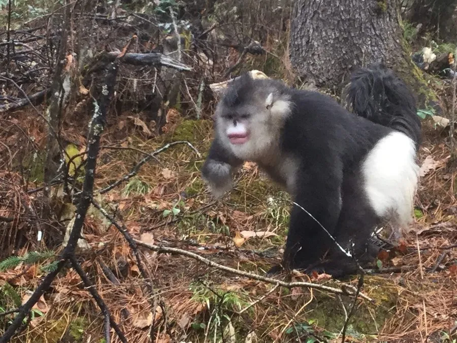

哺乳动物 · 动物界
滇金丝猴 Rhinopithecus bieti

中国云南与西藏交界高山的特有灵长类，是唯一以针叶林为家的金丝猴，粉红色面孔配黑白长毛，冬季在雪线附近活动。
- 分类
- 门脊索动物门纲哺乳纲目灵长目科猴科属仰鼻猴属
- 栖息环境
- 海拔 3000–4500 米的亚高山针叶林与针阔混交林
- 地理分布
- 中国云南西北部与西藏东南部的云岭山脉，为中国特有物种
- 保护级别
- IUCN 濒危（EN）；中国国家一级保护动物
物种志
滇金丝猴体长 0.5–0.8 米，尾长 0.5–0.7 米，体重 10–20 kg。它的面部裸露呈粉红色，鼻梁短、鼻孔上翻，是仰鼻猴的典型特征；背部、头顶和四肢外侧覆黑色长毛，胸腹和四肢内侧为白色，毛长而蓬松，成年雄性嘴角有肉瘤。
滇金丝猴是中国特有物种，仅分布于云南西北部与西藏东南部的云岭山脉，栖息于海拔 3000–4500 米的亚高山针叶林和针阔混交林，是唯一以针叶林为主要栖息地的金丝猴。它以松萝、苔藓、嫩芽、树皮和竹笋为食，冬季食物匮乏时会下移到较低海拔。猴群由多个一雄多雌单元组成，可达数十至上百只，天亮后在高大乔木间活动，夜间在树上休息。雌性妊娠期约 7 个月，每胎 1 仔。由于栖息地破碎和历史上的捕猎，滇金丝猴被列为濒危，中国将其列为国家一级保护动物。
形态与习性
- 食性松萝、苔藓、嫩芽、树皮与竹笋
- 体长0.5–0.8 m，尾长 0.5–0.7 m
- 体重10–20 kg
- 寿命约 20 年
- 繁殖妊娠期约 7 个月，每胎 1 仔
- 栖息海拔3000–4500 m，冬季下移到较低海拔
- 社会结构多个一雄多雌单元组成大群
趣味知识
- 滇金丝猴是唯一以针叶林为主要栖息地的金丝猴。
- 它的鼻梁短、鼻孔上翻，面孔呈粉红色，与黑白长毛对比鲜明。
- 冬季食物匮乏时，猴群会下移到较低海拔寻找松萝和树皮。
- 滇金丝猴是中国特有物种，仅分布在云南与西藏交界的高山。